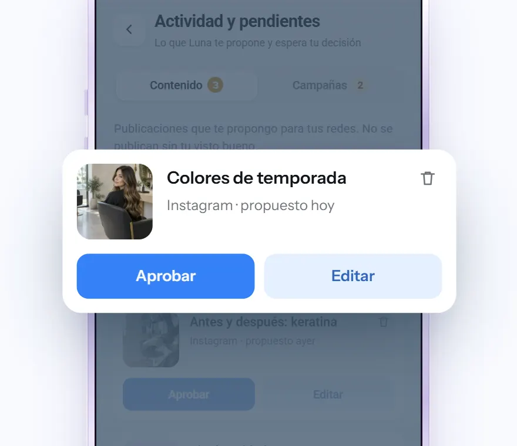
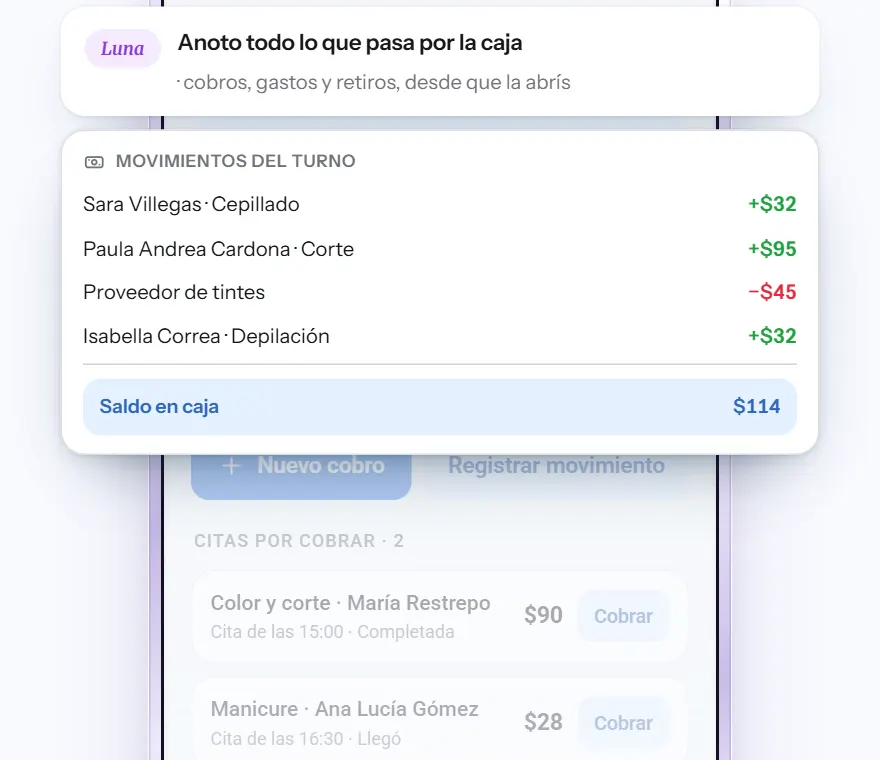
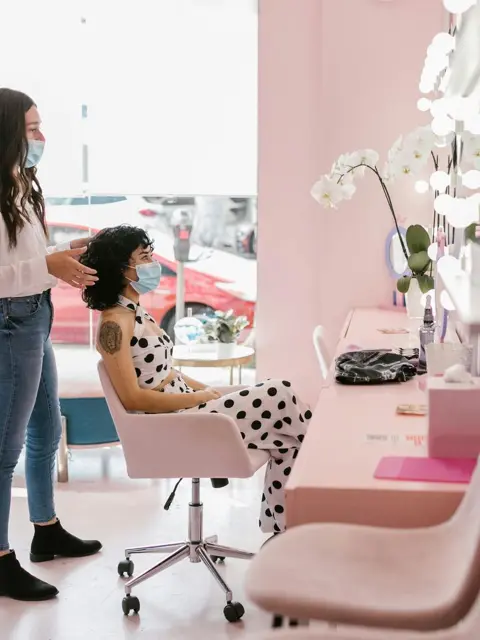
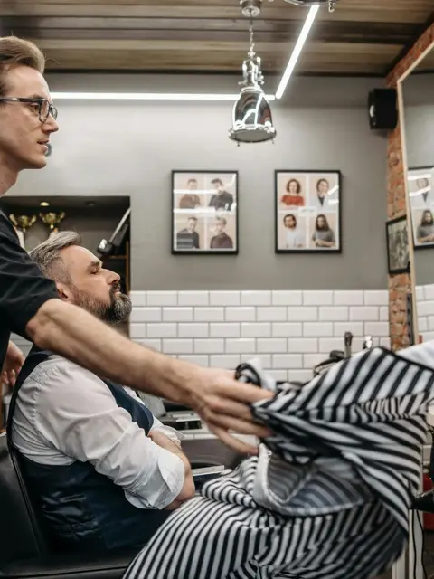
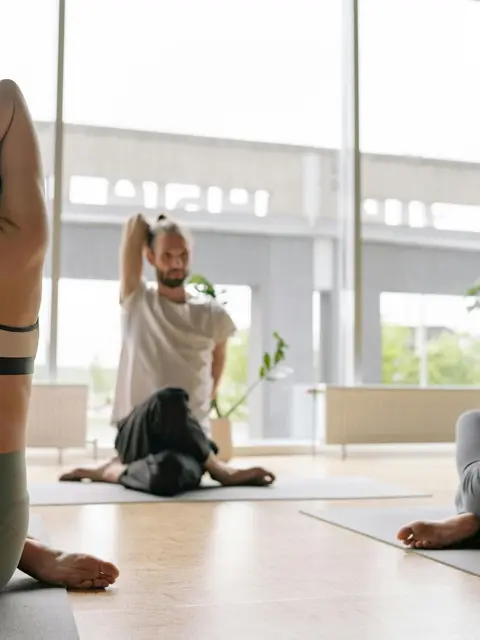
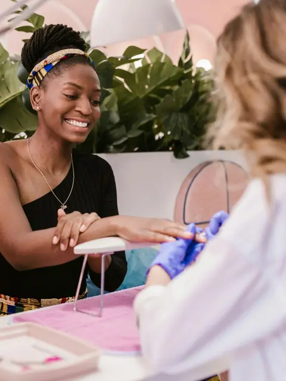
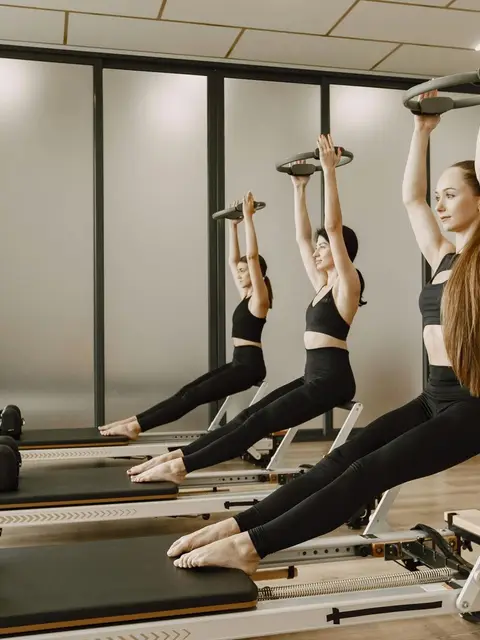
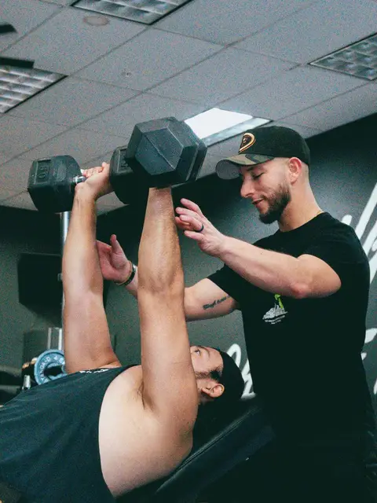

Atiende
Responde, cotiza y cierra, a la hora que sea.
Luna atiende a tus clientes, les da turno, guarda el registro de cada uno y te cuenta cómo va tu negocio cuando se lo preguntás. Vos seguís trabajando.
Registrate ahoraNo necesitás saber de tecnología ni tener todo listo.
Preguntale lo que necesites saber. Luna te responde al toque, sin que busques nada.
¿Cuántos turnos tengo mañana?
LunaDoce. El primero a las 9:00 y tenés libre de 15:00 a 16:00.
¿Quién no vino hace dos meses?
LunaOcho clientas. ¿Les preparo un mensaje para que vuelvan?
¿Cómo va la caja esta semana?
LunaEntraron $480.000 y registré tres gastos. Vas mejor que la semana pasada.
Tené el control de tu negocio, organizá tu día y descubrí nuevas oportunidades con Luna.
Hablás una vez y se mueve todo tu negocio.
Responde, cotiza y cierra, a la hora que sea.
Llena tu semana sin que abras el calendario.
Sabe quién es cada cliente antes de que lo mires.
El contenido de tus redes, hecho y programado.

Tu negocio en internet sin que lo armes.
Cuánto entró y cuánto salió, sin libretas.

Luna atiende a tus clientes 24/7 en WhatsApp, Instagram, Facebook y el chat de tu web.
Seguí estos 4 pasos y Luna aprende con vos.
Tocá «Registrate» y dejá tus datos. Te toma un minuto.
Apenas te registrás, te llega un mensaje para conocer tu negocio y dejar todo listo.
Le pasás tu Instagram o tu web, archivos o simplemente le contás. Aprovecha lo que ya tenés.
Atiende, da turnos y te cuenta cómo va todo. Vos decidís lo importante.
No hace falta saber de inteligencia artificial ni preparar nada antes.
Registrate ahora





Luna es la inteligencia artificial de gurú y se ocupa del día a día de tu negocio. Atiende las consultas de tus clientes y les da turno en la misma conversación. Guarda el registro de cada cliente, con lo que pide y cuándo vino, para que sepas quién es antes de atenderlo. Te propone contenido y campañas listas para aprobar, anota los movimientos de la caja y te responde cuando le preguntás por tus turnos, tus clientes o cómo va la semana. Vos ganás tiempo y te quedás con las decisiones importantes.
No. Le hablás a Luna como le hablarías a alguien de tu equipo:
Luna atiende las 24 horas, los 7 días de la semana, en:
En todos los canales hace lo mismo:
La que ya tenés. Luna aprende de:
No hace falta tenerlo todo el primer día. Luna empieza con lo que haya y después lo completás o lo cambiás cuando quieras.
Desde ahí le hablás cuando quieras, para preguntarle cómo va tu negocio o pedirle lo que necesites.
Registrate y te escribimos por WhatsApp para poner a Luna a trabajar en tu negocio.
Registrate© gurú | Soluciones Multimedia SA